济州岛之旅
@2014-08-07
来回飞机:
- 8月7日 BK2717 天津/济州 （北京时间）15:15-18:05（韩国时间）
- 8月11日 BK2718 济州/天津 （韩国时间）19:00-20:20（北京时间）
济州岛是韩国的一个小岛，对中国游客来说是落地签证，所以岛上可以看到很多中国游客，并且当地很多服务都提供中文。
- 通讯设备。可以提前在淘宝上购买中国移动香港的3G卡（7天5G流量），或者是到了当地租用WiFi(egg, 需要充电每次能够坚持大约4-6小时)
- 插头转换器。应该属于欧洲标准插头，和 赫尔新基 插头一样，所以我之前买的插头转换器正好可以用上。
- 时差。济州岛时间比北京时间快一个小时。
- 餐饮。大韩人民果然是对泡菜情有独钟，旅游期间每餐都有泡菜。主食还吃过海带汤，大酱汤，石锅拌饭，黑猪肉，人参鸡汤等。香蕉牛奶在酒店楼下的7-11就有卖1000韩元不贵。CASS 啤酒应该是韩国一个比较大的品牌。因为临海所以海产品也比较多包括海带和海苔，据说当地孕妇上每餐都要喝海带汤。
- 汇率。1人民币 = 166韩元，不过我从导游那里换韩元的话是320人民币 = 50000韩元。韩元里面面额是10,50,100,500,1000,5000,10000,50000这些，10通常是用来交税使用的，商品价格里面通常不会有。
- 石头老爷爷。 在济州岛随处可见这样的石头老爷爷，他是济州岛的守护神。由火山石雕成的，眼睛凸出，鼻子粗大，嘴唇紧闭。摸石头爷爷的鼻子会生儿子，摸耳朵就可以生女儿，摸肚子则可以升官发财。
- 矮脚马。 矮脚马是济州岛的岛宝，生活在汉拿山山带上。每只马屁股上都有编号并且脖子内植入了芯片。韩国政府为了控制数量，每年产下多少马才能允许杀掉多少马。杀马那天有专门的节日叫做杀马节。
day1
day2
- 泰迪熊 博物馆: 博物馆里泰迪熊各种拟人化，非常适合小朋友去看。镇点之宝是一只叫做hera的女性泰迪熊，头上带了一个镶满钻石的皇冠价值不菲，周围则是古希腊神话中的奥林波斯十二神（也都是泰迪熊哦:)
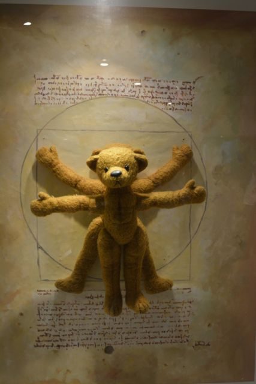
- 鸟岛跨海大桥 & 天地渊瀑布
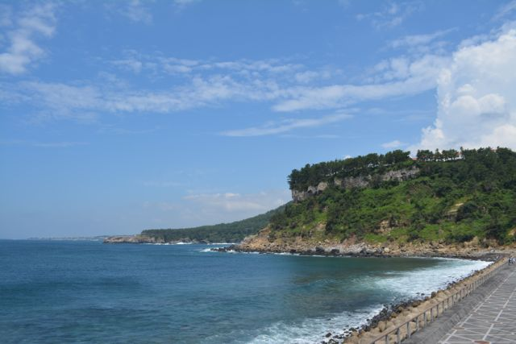 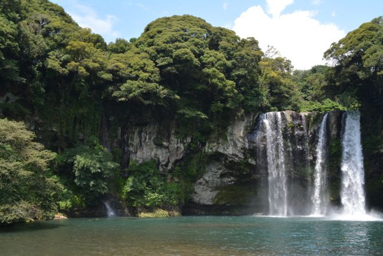
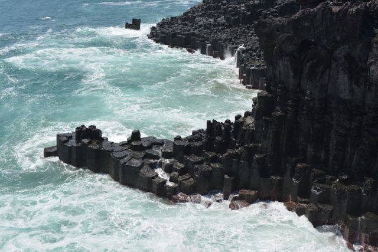
- 药泉寺： 韩国寺庙和中国的差别比较大，首先寺庙允许拍照，其次不需要还愿。
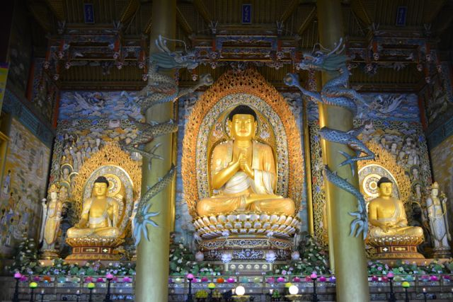 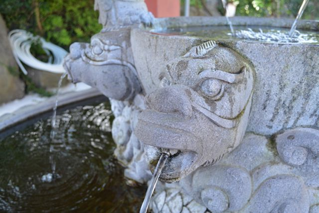 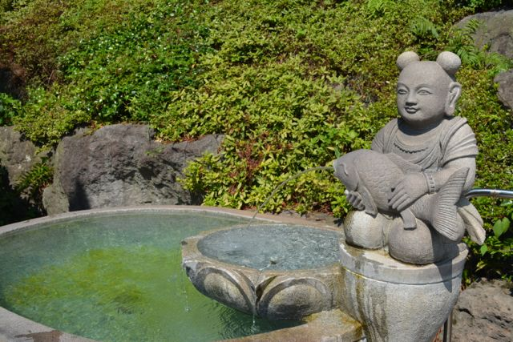
day3
- 城邑民俗村: 济州岛有一个特别的人群叫做海女，专门靠下海捕捉海鲜以及海产品为生。她们可以穿着潜水服潜到海下面20米左右坚持3分钟。如今已经没有海女这个职业了，现在最年轻的海女都70多了，但是她们现在依然坚持下海。不过这些海女老了都容易头疼并且听力不太好。视频
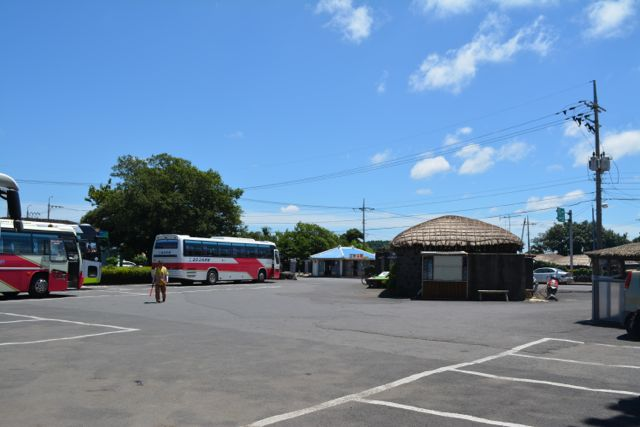
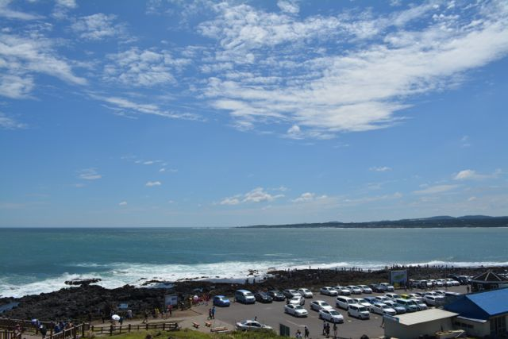 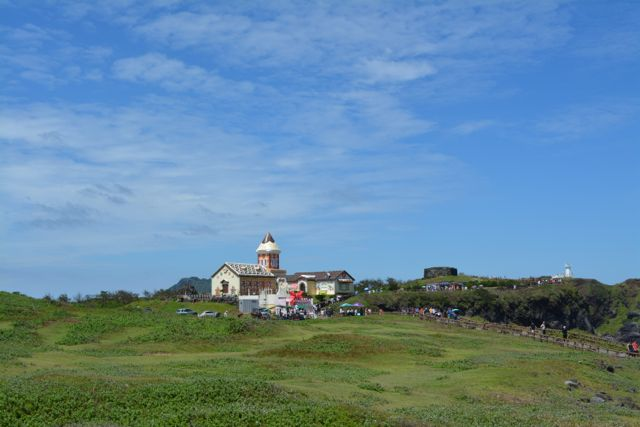
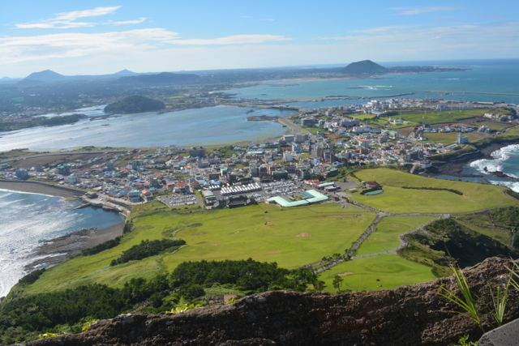 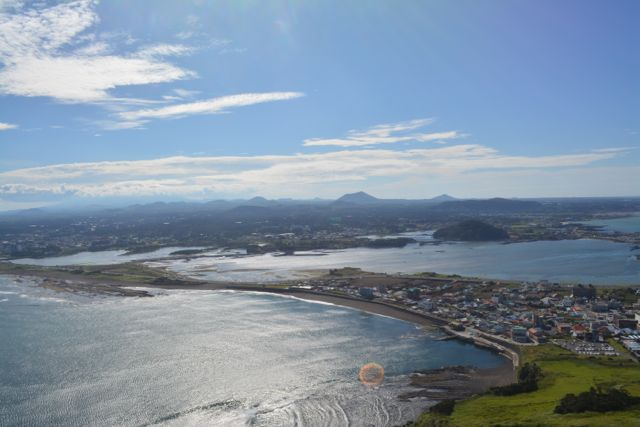
- The Painters Hero: 在汉拿山大学里面的涂鸦秀。这类表演在中国应该也有，但是他们比较有特点是他们善于将娱乐观众互动穿插于其中。
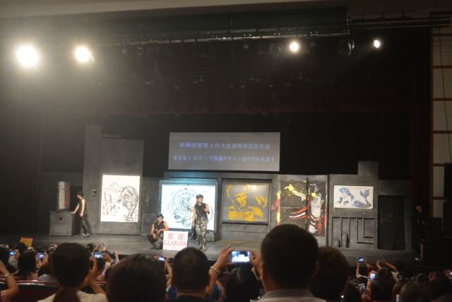 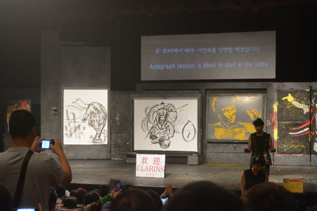
day4
这天自由活动，但是因为自己有一些事情所以跑到星巴克咖啡店去了。如果自己没有事情的话应该回去 性爱主题公园 去看看.
day5
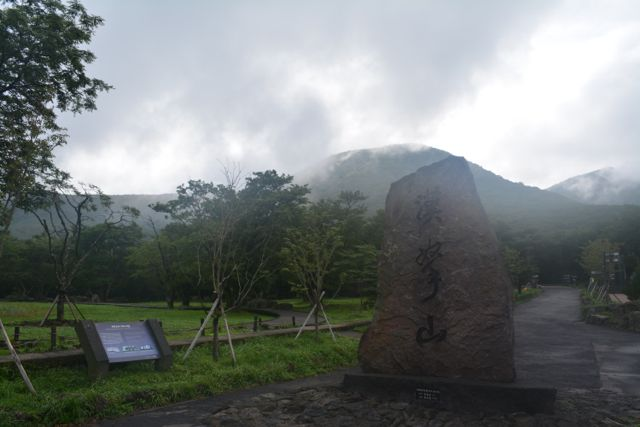 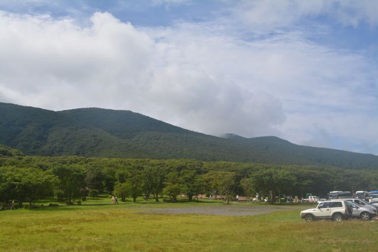
some cosmetic items(branch, price in $, no, ratio) I have purchased in duty free shop(mostly from lotte).
- missha 15 * 2 * 6.16
- laneige 30 * 2 * 6.16
- leaders 25 * 6.16 + 25 * 6.16 + 25 * 3 * 6.16
- it's skin 100 * 6.16
- hera 35 * 4 * 6.16
- prada 1890 * 6.16 (wow!!!)
- holika(pig-nose) 17 * 6 * 6.16 (from shilla)
- dior 92 * 2 * 6.16 (from shilla)
- sk2 140 * 2 * 6.16 + 170 * 2 * 6.16